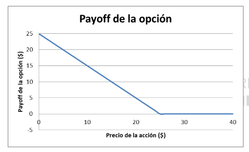

Este segmento explica la naturaleza compleja de las opciones financieras y cómo su valoración difiere significativamente de activos más tradicionales como acciones y bonos. Se destaca que, a diferencia de estos activos, las opciones tienen flujos de caja que dependen directamente de la evolución futura del precio de un activo subyacente. Además, se discute el papel de las opciones en la gestión de riesgos, donde pueden usarse para hedging o especulación, dependiendo de las estrategias del inversor.
El modelo binomial es introducido como un método fundamental para valorar opciones, que se basa en un proceso estocástico discreto para modelar los movimientos del precio del activo subyacente. Se explica el concepto de árbol binomial, una herramienta visual que representa los posibles precios futuros del activo en intervalos de tiempo hasta el vencimiento de la opción. Este modelo permite construir una cartera réplica, que es una combinación de activos libres de riesgo y el activo subyacente, cuyo valor final replicará los pagos de la opción en diferentes escenarios futuros.
Se aborda en detalle la fórmula de Black-Scholes, una metodología analítica para la valoración de opciones europeas que asume una distribución log-normal de los retornos del activo subyacente y precios que siguen un movimiento browniano geométrico. Se discuten los componentes de la fórmula, incluyendo las variables de precio de ejercicio, tiempo hasta el vencimiento, volatilidad del activo subyacente, y la tasa de interés libre de riesgo. La sección también cubre cómo esta fórmula se ajusta a diferentes condiciones de mercado y cómo maneja las opciones sobre activos que no pagan dividendos.
Este tema detalla cómo utilizar las probabilidades neutrales al riesgo para la valoración de opciones en un marco teórico donde los inversores son indiferentes al riesgo. Se explica la idea de que, bajo este enfoque, todos los activos deben ser descontados al tipo libre de riesgo, lo que simplifica el cálculo de los valores esperados de los flujos de caja de las opciones. Se discute cómo estas probabilidades pueden derivarse de los precios de mercado y cómo contrastan con las probabilidades reales del mundo donde los inversores son aversos al riesgo.
Se examina cómo se pueden evaluar el retorno y el riesgo asociados a las opciones. Se enfatiza cómo la beta de una opción, que mide su riesgo sistemático en comparación con el mercado, puede ser significativamente diferente de la beta del activo subyacente debido a la naturaleza apalancada de las opciones. Se introduce la noción de delta de la opción como una medida de la sensibilidad del precio de la opción a cambios en el precio del activo subyacente. Además, se discuten estrategias para el manejo del riesgo en posiciones de opciones, como la cobertura dinámica.
1. (De BDM) Es el 30 de diciembre de 2009 y has decidido comprar 25 February puts sobre el índice DJIA con precio de ejercicio $106. En la última página hay una tabla con las cotizaciones en este momento. ¿Cuánto dinero costará esta compra? ¿Está esta put in-the-money o out-of-themoney?
El precio de compra (ask-price ) es de $3.30 por opción.
El coste total es, por lo tanto (recordando que un contrato de opción son, realmente, 100 opciones sobre 100 acciones):
25 × $3.30 × 100 = $8,250
Dado que el precio de ejercicio ($106) es mayor que el valor actual del subyacente (índice DJIA: $105.49) la opción put está in-the-money.
2. Tienes una posición larga en una put sobre acciones de XYZ con precio de ejercicio $25. La opción expira hoy. Representa el payoff de esta opción en función del precio de la acción de XYZ.
El payoff de esta opción es P = max(25-S, 0).
